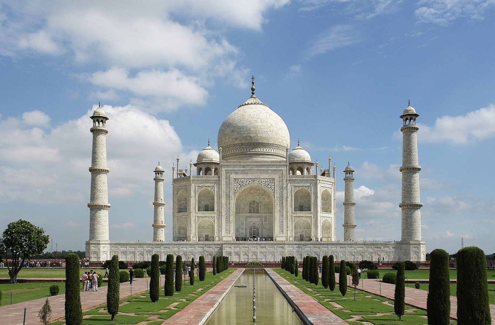
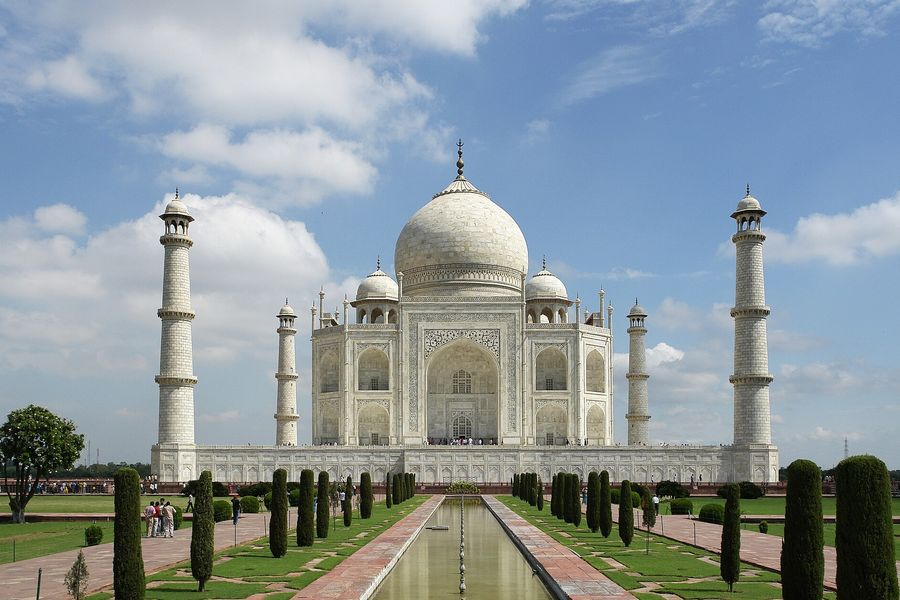
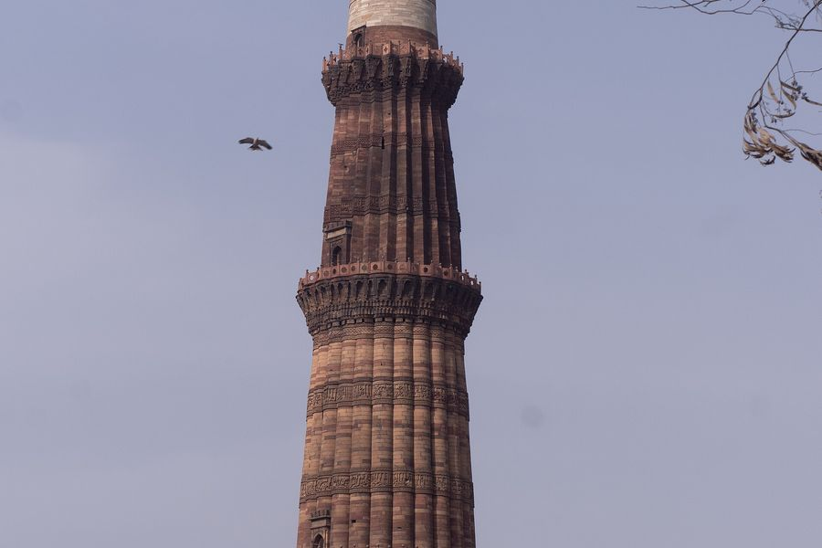
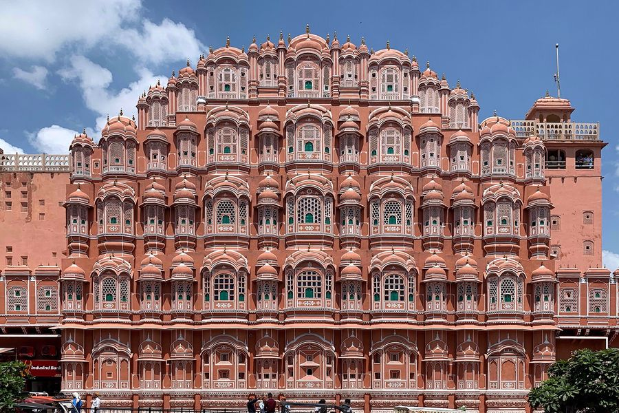
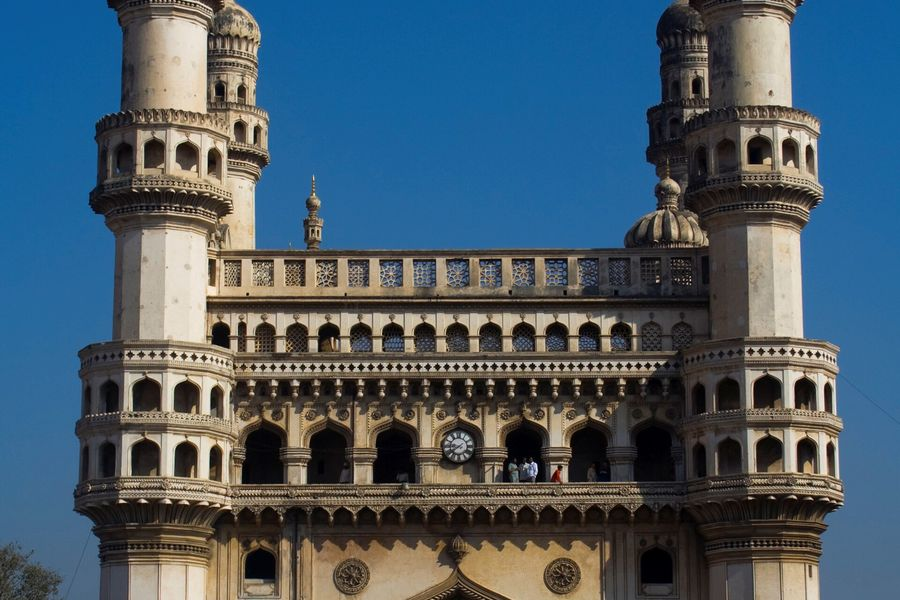
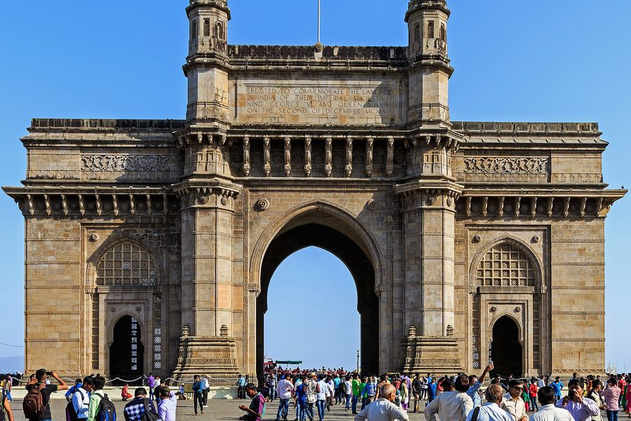
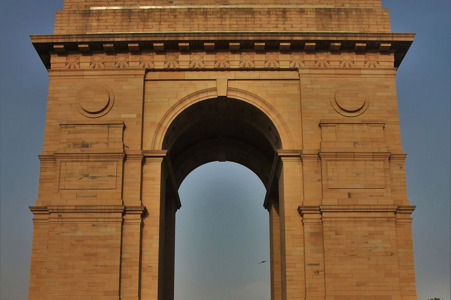
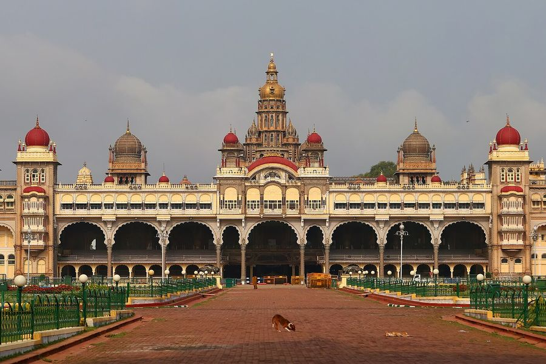

Twelve monuments, built again in code.
No photographs, no downloaded models. Every dome, bracket and lattice screen here is generated by a few thousand lines of JavaScript and lit by a physical sky. Walk around them, watch the light change, read the history.

Photograph by Yann, edited by Jim Carter · CC BY-SA 4.0
via Wikimedia Commons · all credits
Why build a monument twice?
A monument is a set of decisions frozen in stone: how wide the arch, how many flutes on the shaft, how far the balcony projects. Rebuilding one in code makes those decisions visible. You can change the hour of the day, stand at the foot of the minaret, or watch a monsoon arrive over the charbagh.
Each page in this atlas is a single miniature, drawn from primitives — cylinders, boxes, lathes and arches — and merged into a handful of draw calls. The colours come from the real materials: Makrana marble, red sandstone from Dholpur, Deccan basalt, khondalite, gold leaf.
The history on every page is adapted from Wikipedia and cited in full on the credits page. The photographs are from Wikimedia Commons, each with its own licence. The models themselves are released under CC0.
Silhouette first
Proportion and profile before ornament. If you cannot recognise the building from across the room, the model has failed.
Light is the material
A physical sky, a moving sun and floodlights at dusk. Marble is a different colour at six in the morning and nine at night.
Sources in the open
Every page links its Wikipedia article, its UNESCO record and the Commons file behind its photograph, with the licence named.
12 monuments, from Sanchi to the Gateway
Oldest to newest spans two thousand years — a Mauryan stupa and a 1920s memorial arch, modelled on the same terms.

01UNESCOAgra · Uttar Pradesh
Taj Mahal ताज महल
An ivory marble mausoleum on the Yamuna, raised by Shah Jahan for Mumtaz Mahal — the most photographed building in India.
Enter the miniature
02UNESCOMehrauli, Delhi · Delhi
Qutb Minar क़ुतुब मीनार
A 72.5-metre victory tower of fluted red sandstone and marble, begun by Qutb al-Din Aibak and finished by three later sultans.
Enter the miniature
03UNESCOJaipur · Rajasthan
Hawa Mahal हवा महल
A honeycomb screen of 953 latticed windows in pink sandstone, built so the women of the palace could watch the street unseen.
Enter the miniature
04UNESCO tentativeHyderabad · Telangana
Charminar चारमीनार
Four grand arches and four minarets over the old city, raised in 1591 at the crossing of Hyderabad's bazaars.
Enter the miniature
05Mumbai · Maharashtra
Gateway of India गेटवे ऑफ़ इंडिया
A basalt triumphal arch on the Mumbai waterfront, built to mark a royal landing and later the last exit of the Raj.
Enter the miniature
06New Delhi · Delhi
India Gate इंडिया गेट
Lutyens' 42-metre war memorial arch, inscribed with the names of 74,187 soldiers of the First World War.
Enter the miniature
07Mysuru · Karnataka
Mysore Palace मैसूर पैलेस
The Amba Vilas Palace: a royal residence of pink domes, arched colonnades and a gold finial, lit by a hundred thousand lamps on Sundays.
Enter the miniatureAmritsar · Punjab
Golden Temple हरमंदिर साहिब
Harmandir Sahib, the holiest gurdwara of Sikhism, standing in the middle of the Amrit Sarovar and clad in gold leaf.
Enter the miniatureKonark · Odisha
Konark Sun Temple कोणार्क सूर्य मंदिर
A stone chariot for the sun god, with 24 carved wheels, seven horses and a tower that once stood 61 metres high.
Enter the miniatureSanchi · Madhya Pradesh
Sanchi Stupa साँची का स्तूप
Ashoka's hemispherical relic mound, ringed by a stone railing and four carved gateways on a hill above the plain.
Enter the miniatureKolkata · West Bengal
Victoria Memorial विक्टोरिया मेमोरियल
A white marble domed hall on the Kolkata Maidan, the largest monument to a monarch anywhere in the world.
Enter the miniatureMadurai · Tamil Nadu
Meenakshi Temple मीनाक्षी मंदिर
Fourteen painted gopurams over the Vaigai, a temple city dedicated to Meenakshi and Sundareswarar.
Enter the miniatureOne engine, twelve buildings, no assets.
Geometry from code
Each monument is a module of a few hundred lines. Primitives are transformed, merged by material and drawn in one pass — tens of thousands of triangles, a dozen draw calls.
A sky that moves
Rayleigh and Mie scattering drive the sky, the sun and the moon. Clouds, rain and mist are layered on top; at dusk the floodlights come up and the stone turns amber.
History in place
Every page carries a guided tour, a history drawer and the sources behind it. Read the story of the building while you orbit it, then follow the links to Wikipedia and UNESCO.
A timeline of the atlas
From Ashoka's relic mound to Lutyens' memorial arch. Scroll the line sideways.
Facts from Wikipedia, photographs from Commons
Every history in this atlas is adapted from the English Wikipedia article on the monument, which is published under CC BY-SA 4.0. The facts, dates and figures are checked against the article and against UNESCO's World Heritage records where a site is inscribed.
The photographs are the lead images of those articles on Wikimedia Commons. Each is credited to its photographer with the licence named, and links back to the original file. The 3D models use no photographs at all — they are geometry, generated at runtime.
Reuse
Code and models: CC0 1.0 Universal — public domain dedication. Copy, remix, publish, sell; no permission needed.
Photographs: each under its own licence (CC BY, CC BY-SA, FAL, GFDL), credited on the credits page.
Text: adapted from Wikipedia under CC BY-SA 4.0.
Type: Cormorant Garamond, JetBrains Mono and Noto Sans Devanagari, all under the SIL Open Font License.